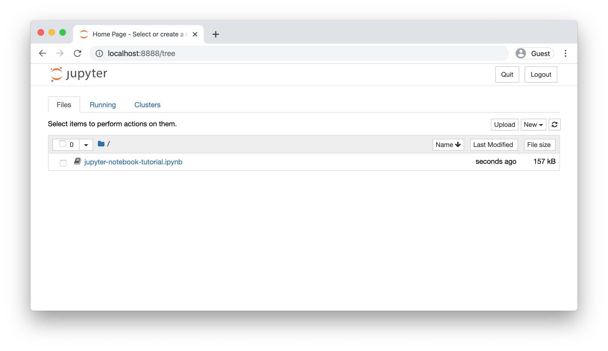

Python/Numpy教程

本教程由 Justin Johnson原创
我们将在本课程的所有作业中使用Python编程语言。Python本身就是一种很好的通用编程语言，但在一些流行库（numpy、scipy、matplotlib）的帮助下，它成为了科学计算的强大环境。
我们希望你们中的许多人都对Python和numpy有一些经验；对于其他人来说，本节将作为关于Python编程语言及其在科学计算中的使用的速成课程。我们还将介绍notebook，这是修改Python代码的一种非常方便的方式。你们中的一些人可能以前有不同语言的知识，在这种情况下，我们还建议参考： 用于Matlab用户的NumPy，适用于R用户的Python，和/或适用于SAS用户的Python。
Jupyter和Colab Notebooks⚓︎
在深入研究Python之前，我们想简单地谈谈 笔记本。Jupyter笔记本允许您在web浏览器中本地编写和执行Python代码。Jupyter 笔记本使得修改代码并零零星星地执行代码变得非常容易；因此，它们被广泛用于科学计算。另一方面，Colab是谷歌风格的Jupyter 笔记本，特别适合机器学习和数据分析，完全在云中运行。 Colab是基于steroids的Jupyter笔记本：它是免费的，无需安装，预装了许多软件包，很容易与世界分享，并受益于免费访问GPU和TPU等硬件加速器（有一些注意事项）。
在Colab中运行教程（推荐）。如果您希望完全在Colab中运行本教程，请单击此页面顶部的 Open in Colab 图标。
在Jupyter笔记本中运行教程。如果您希望使用Jupyter在本地运行笔记本电脑，请确保您的虚拟环境已正确安装（根据安装说明），激活它，然后运行pip install notebook安装Jupyter笔记本电脑。接下来，打开笔记本并通过右键单击页面并选择“将页面另存为”将其下载到您选择的目录中。然后 cd到该目录并运行jupyter notebook。
这将自动启动http://localhost:8888的笔记本服务器。
如果一切正常，您应该会看到这样的屏幕，显示当前目录中所有可用的笔记本电脑。单击jupyter-notebook-tutorial.ipynb
并按照笔记本上的说明进行操作。否则，您可以继续阅读下面的教程和代码片段。
Python⚓︎
Python是一种高级、动态类型的多范式编程(dynamically typed multiparadigm programming)语言。Python代码通常被称为几乎像伪代码，因为它允许你用很少的代码行来表达非常强大的思想，同时非常易读。以下是Python中经典快速排序算法的一个实现示例：
def quicksort(arr):
if len(arr) <= 1:
return arr
pivot = arr[len(arr) // 2]
left = [x for x in arr if x < pivot]
middle = [x for x in arr if x == pivot]
right = [x for x in arr if x > pivot]
return quicksort(left) + middle + quicksort(right)
print(quicksort([3,6,8,10,1,2,1]))
# Prints "[1, 1, 2, 3, 6, 8, 10]"
Python 版本⚓︎
截至2020年1月1日，Python正式停止对python2的支持支持 。在本课程中，所有代码将使用Python 3.7。在继续本教程之前，请确保您已按照设置说明进行了设置，并正确安装了python3虚拟环境。在激活环境并运行python --version命令后，您可以通过命令行双重检查您的Python版本。
基本数据类型⚓︎
与大多数语言一样，Python有许多基本类型，包括整数、浮点数、布尔值和字符串。这些数据类型的行为方式与其他编程语言相似。
Numbers数字:整数和浮点数的工作方式与其他语言相同。
x = 3
print(type(x)) # Prints "<class 'int'>"
print(x) # Prints "3"
print(x + 1) # Addition; prints "4"
print(x - 1) # Subtraction; prints "2"
print(x * 2) # Multiplication; prints "6"
print(x ** 2) # Exponentiation; prints "9"
x += 1
print(x) # Prints "4"
x *= 2
print(x) # Prints "8"
y = 2.5
print(type(y)) # Prints "<class 'float'>"
print(y, y + 1, y * 2, y ** 2) # Prints "2.5 3.5 5.0 6.25"
x++）或递减（x--）操作符。
Python还为复数提供了内置类型；您可以在文档中找到所有详细信息。
Booleans布尔值：Python实现了所有通常的布尔逻辑运算符，但使用的是英文单词而不是符号（&&, ||, 等）：
t = True
f = False
print(type(t)) # Prints "<class 'bool'>"
print(t and f) # Logical AND; prints "False"
print(t or f) # Logical OR; prints "True"
print(not t) # Logical NOT; prints "False"
print(t != f) # Logical XOR; prints "True"
Strings: Python非常支持字符串
hello = 'hello' # String literals can use single quotes
world = "world" # or double quotes; it does not matter.
print(hello) # Prints "hello"
print(len(hello)) # String length; prints "5"
hw = hello + ' ' + world # String concatenation
print(hw) # prints "hello world"
hw12 = '%s %s %d' % (hello, world, 12) # sprintf style string formatting
print(hw12) # prints "hello world 12"
字符串对象有很多有用的方法；例如：
s = "hello"
print(s.capitalize()) # Capitalize a string; prints "Hello"
print(s.upper()) # Convert a string to uppercase; prints "HELLO"
print(s.rjust(7)) # Right-justify a string, padding with spaces; prints " hello"
print(s.center(7)) # Center a string, padding with spaces; prints " hello "
print(s.replace('l', '(ell)')) # Replace all instances of one substring with another;
# prints "he(ell)(ell)o"
print(' world '.strip()) # Strip leading and trailing whitespace; prints "world"
Containers容器⚓︎
Python 包括几种内置的容器类型：列表（lists）、字典（dictionaries）、集合（sets）和元组（tuples）。
Lists列表⚓︎
列表是 Python 中的数组等价物，但可调整大小并且可以包含不同类型的元素：
xs = [3, 1, 2] # Create a list
print(xs, xs[2]) # Prints "[3, 1, 2] 2"
print(xs[-1]) # Negative indices count from the end of the list; prints "2"
xs[2] = 'foo' # Lists can contain elements of different types
print(xs) # Prints "[3, 1, 'foo']"
xs.append('bar') # Add a new element to the end of the list
print(xs) # Prints "[3, 1, 'foo', 'bar']"
x = xs.pop() # Remove and return the last element of the list
print(x, xs) # Prints "bar [3, 1, 'foo']"
Slicing切片: 除了逐个访问列表元素外，Python还提供了简洁的语法来访问子列表；这被称为 slicing切片:
nums = list(range(5)) # range is a built-in function that creates a list of integers
print(nums) # Prints "[0, 1, 2, 3, 4]"
print(nums[2:4]) # Get a slice from index 2 to 4 (exclusive); prints "[2, 3]"
print(nums[2:]) # Get a slice from index 2 to the end; prints "[2, 3, 4]"
print(nums[:2]) # Get a slice from the start to index 2 (exclusive); prints "[0, 1]"
print(nums[:]) # Get a slice of the whole list; prints "[0, 1, 2, 3, 4]"
print(nums[:-1]) # Slice indices can be negative; prints "[0, 1, 2, 3]"
nums[2:4] = [8, 9] # Assign a new sublist to a slice
print(nums) # Prints "[0, 1, 8, 9, 4]"
Loops循环: 您可以像这样循环遍历列表的元素：
animals = ['cat', 'dog', 'monkey']
for animal in animals:
print(animal)
# Prints "cat", "dog", "monkey", each on its own line.
如果你想要在循环体内访问每个元素的索引，请使用内置的enumerate函数。
animals = ['cat', 'dog', 'monkey']
for idx, animal in enumerate(animals):
print('#%d: %s' % (idx + 1, animal))
# Prints "#1: cat", "#2: dog", "#3: monkey", each on its own line
List comprehensions列表推导式: 在编程中，我们经常想要将一种数据类型转换为另一种。以一个简单的例子来说明，考虑下面计算平方数的代码：
nums = [0, 1, 2, 3, 4]
squares = []
for x in nums:
squares.append(x ** 2)
print(squares) # Prints [0, 1, 4, 9, 16]
你可以使用列表推导式来简化这段代码：
nums = [0, 1, 2, 3, 4]
squares = [x ** 2 for x in nums]
print(squares) # Prints [0, 1, 4, 9, 16]
列表推导式还可以包含条件：
nums = [0, 1, 2, 3, 4]
even_squares = [x ** 2 for x in nums if x % 2 == 0]
print(even_squares) # Prints "[0, 4, 16]"
Dictionaries字典⚓︎
一个字典储存（键，值）对，类似于Java中的Map或Javascript中的对象。你可以像这样使用它：
d = {'cat': 'cute', 'dog': 'furry'} # Create a new dictionary with some data
print(d['cat']) # Get an entry from a dictionary; prints "cute"
print('cat' in d) # Check if a dictionary has a given key; prints "True"
d['fish'] = 'wet' # Set an entry in a dictionary
print(d['fish']) # Prints "wet"
# print(d['monkey']) # KeyError: 'monkey' not a key of d
print(d.get('monkey', 'N/A')) # Get an element with a default; prints "N/A"
print(d.get('fish', 'N/A')) # Get an element with a default; prints "wet"
del d['fish'] # Remove an element from a dictionary
print(d.get('fish', 'N/A')) # "fish" is no longer a key; prints "N/A"
Loops循环: 在字典中迭代keys 键非常容易：
d = {'person': 2, 'cat': 4, 'spider': 8}
for animal in d:
legs = d[animal]
print('A %s has %d legs' % (animal, legs))
# Prints "A person has 2 legs", "A cat has 4 legs", "A spider has 8 legs"
如果您想要访问键和它们对应的值，请使用items方法：
d = {'person': 2, 'cat': 4, 'spider': 8}
for animal, legs in d.items():
print('A %s has %d legs' % (animal, legs))
# Prints "A person has 2 legs", "A cat has 4 legs", "A spider has 8 legs"
Dictionary comprehensions字典推导式: 这类似于列表推导式，但允许你轻松地构建字典。例如：
nums = [0, 1, 2, 3, 4]
even_num_to_square = {x: x ** 2 for x in nums if x % 2 == 0}
print(even_num_to_square) # Prints "{0: 0, 2: 4, 4: 16}"
Sets集合⚓︎
集合是一个无序的、不重复元素的集合。作为一个简单的例子，考虑下面的内容：
animals = {'cat', 'dog'}
print('cat' in animals) # Check if an element is in a set; prints "True"
print('fish' in animals) # prints "False"
animals.add('fish') # Add an element to a set
print('fish' in animals) # Prints "True"
print(len(animals)) # Number of elements in a set; prints "3"
animals.add('cat') # Adding an element that is already in the set does nothing
print(len(animals)) # Prints "3"
animals.remove('cat') # Remove an element from a set
print(len(animals)) # Prints "2"
通常情况下，关于集合的所有信息都可以在文档中找到。
Loops循环: 遍历集合的语法与遍历列表相同；然而，由于集合是无序的，您无法对访问集合元素的顺序做出任何假设。
animals = {'cat', 'dog', 'fish'}
for idx, animal in enumerate(animals):
print('#%d: %s' % (idx + 1, animal))
# Prints "#1: fish", "#2: dog", "#3: cat"
Set comprehensions集合推导式: 与列表和字典一样，我们可以使用集合推导式轻松构建集合：
from math import sqrt
nums = {int(sqrt(x)) for x in range(30)}
print(nums) # Prints "{0, 1, 2, 3, 4, 5}"
Tuples元组⚓︎
元组是一个（不可变的immutable）有序值列表。元组在许多方面与列表类似；其中一个最重要的区别是，元组可以用作字典的键和集合的元素，而列表不能。下面是一个简单的示例：
d = {(x, x + 1): x for x in range(10)} # Create a dictionary with tuple keys
t = (5, 6) # Create a tuple
print(type(t)) # Prints "<class 'tuple'>"
print(d[t]) # Prints "5"
print(d[(1, 2)]) # Prints "1"
Functions函数⚓︎
Python使用def关键字来定义函数。例如：
def sign(x):
if x > 0:
return 'positive'
elif x < 0:
return 'negative'
else:
return 'zero'
for x in [-1, 0, 1]:
print(sign(x))
# Prints "negative", "zero", "positive"
我们经常会定义函数来接受可选的关键字参数，就像这样：
def hello(name, loud=False):
if loud:
print('HELLO, %s!' % name.upper())
else:
print('Hello, %s' % name)
hello('Bob') # Prints "Hello, Bob"
hello('Fred', loud=True) # Prints "HELLO, FRED!"
Classes类⚓︎
在Python中定义类的语法很简单：
class Greeter(object):
# Constructor
def __init__(self, name):
self.name = name # Create an instance variable
# Instance method
def greet(self, loud=False):
if loud:
print('HELLO, %s!' % self.name.upper())
else:
print('Hello, %s' % self.name)
g = Greeter('Fred') # Construct an instance of the Greeter class
g.greet() # Call an instance method; prints "Hello, Fred"
g.greet(loud=True) # Call an instance method; prints "HELLO, FRED!"
数组⚓︎
我们可以从嵌套的Python列表中初始化numpy数组，并使用方括号访问元素：
Numpy⚓︎
Numpy是Python科学计算的核心库。它提供了高性能的多维数组对象和用于处理这些数组的工具。如果您已经熟悉MATLAB，您可能会发现这个教程对于开始使用Numpy非常有用。
Arrays⚓︎
一个numpy数组是一个由值组成的网格grid，所有值都是相同类型的，通过非负整数的元组进行索引。数组的维数是数组的秩 rank；数组的形状shape是一个由整数组成的元组，给出了数组沿每个维度的大小。
我们可以从嵌套的Python列表中初始化numpy数组，并使用方括号访问元素：
import numpy as np
a = np.array([1, 2, 3]) # Create a rank 1 array
print(type(a)) # Prints "<class 'numpy.ndarray'>"
print(a.shape) # Prints "(3,)"
print(a[0], a[1], a[2]) # Prints "1 2 3"
a[0] = 5 # Change an element of the array
print(a) # Prints "[5, 2, 3]"
b = np.array([[1,2,3],[4,5,6]]) # Create a rank 2 array
print(b.shape) # Prints "(2, 3)"
print(b[0, 0], b[0, 1], b[1, 0]) # Prints "1 2 4"
Numpy还提供了许多函数来创建数组：
import numpy as np
a = np.zeros((2,2)) # Create an array of all zeros
print(a) # Prints "[[ 0. 0.]
# [ 0. 0.]]"
b = np.ones((1,2)) # Create an array of all ones
print(b) # Prints "[[ 1. 1.]]"
c = np.full((2,2), 7) # Create a constant array
print(c) # Prints "[[ 7. 7.]
# [ 7. 7.]]"
d = np.eye(2) # Create a 2x2 identity matrix
print(d) # Prints "[[ 1. 0.]
# [ 0. 1.]]"
e = np.random.random((2,2)) # Create an array filled with random values
print(e) # Might print "[[ 0.91940167 0.08143941]
# [ 0.68744134 0.87236687]]"
数组索引⚓︎
Numpy提供了几种访问数组的方法。
Slicing切片: 与Python列表类似，Numpy数组也可以进行切片操作。由于数组可能是多维的，您需要为数组的每个维度指定一个切片：
import numpy as np
# Create the following rank 2 array with shape (3, 4)
# [[ 1 2 3 4]
# [ 5 6 7 8]
# [ 9 10 11 12]]
a = np.array([[1,2,3,4], [5,6,7,8], [9,10,11,12]])
# Use slicing to pull out the subarray consisting of the first 2 rows
# and columns 1 and 2; b is the following array of shape (2, 2):
# [[2 3]
# [6 7]]
b = a[:2, 1:3]
# 数组的切片是相同数据的视图view，因此对其进行修改将修改原始数组。
print(a[0, 1]) # Prints "2"
b[0, 0] = 77 # b[0, 0] is the same piece of data as a[0, 1]
print(a[0, 1]) # Prints "77"
您还可以将整数索引与切片索引混合使用。但是，这样做会产生一个比原始数组低阶lower rank的数组。请注意，这与 MATLAB 处理数组切片的方式非常不同。
import numpy as np
# Create the following rank 2 array with shape (3, 4)
# [[ 1 2 3 4]
# [ 5 6 7 8]
# [ 9 10 11 12]]
a = np.array([[1,2,3,4], [5,6,7,8], [9,10,11,12]])
# Two ways of accessing the data in the middle row of the array.
# Mixing integer indexing with slices yields an array of lower rank,
# while using only slices yields an array of the same rank as the
# original array:
row_r1 = a[1, :] # Rank 1 view of the second row of a
row_r2 = a[1:2, :] # Rank 2 view of the second row of a
print(row_r1, row_r1.shape) # Prints "[5 6 7 8] (4,)"
print(row_r2, row_r2.shape) # Prints "[[5 6 7 8]] (1, 4)"
# We can make the same distinction when accessing columns of an array:
col_r1 = a[:, 1]
col_r2 = a[:, 1:2]
print(col_r1, col_r1.shape) # Prints "[ 2 6 10] (3,)"
print(col_r2, col_r2.shape) # Prints "[[ 2]
# [ 6]
# [10]] (3, 1)"
Integer array indexing整数数组索引:当你使用切片对numpy数组进行索引时，所得到的数组视图将始终是原始数组的子数组。相比之下，整数数组索引允许你使用另一个数组的数据构建任意数组。以下是一个例子：
import numpy as np
a = np.array([[1,2], [3, 4], [5, 6]])
# An example of integer array indexing.
# The returned array will have shape (3,) and
print(a[[0, 1, 2], [0, 1, 0]]) # Prints "[1 4 5]"
# The above example of integer array indexing is equivalent to this:
print(np.array([a[0, 0], a[1, 1], a[2, 0]])) # Prints "[1 4 5]"
# When using integer array indexing, you can reuse the same
# element from the source array:
print(a[[0, 0], [1, 1]]) # Prints "[2 2]"
# Equivalent to the previous integer array indexing example
print(np.array([a[0, 1], a[0, 1]])) # Prints "[2 2]"
一个有用的整数数组索引技巧是选择或改变矩阵的每一行中的一个元素
import numpy as np
# Create a new array from which we will select elements
a = np.array([[1,2,3], [4,5,6], [7,8,9], [10, 11, 12]])
print(a) # prints "array([[ 1, 2, 3],
# [ 4, 5, 6],
# [ 7, 8, 9],
# [10, 11, 12]])"
# Create an array of indices
b = np.array([0, 2, 0, 1])
# Select one element from each row of a using the indices in b
print(a[np.arange(4), b]) # Prints "[ 1 6 7 11]"
# Mutate one element from each row of a using the indices in b
a[np.arange(4), b] += 10
print(a) # prints "array([[11, 2, 3],
# [ 4, 5, 16],
# [17, 8, 9],
# [10, 21, 12]])
Boolean array indexing布尔数组索引:布尔数组索引允许您选择数组的任意元素。经常使用这种类型的索引来选择满足某些条件的数组元素。以下是一个例子：
import numpy as np
a = np.array([[1,2], [3, 4], [5, 6]])
bool_idx = (a > 2) # Find the elements of a that are bigger than 2;
# this returns a numpy array of Booleans of the same
# shape as a, where each slot of bool_idx tells
# whether that element of a is > 2.
print(bool_idx) # Prints "[[False False]
# [ True True]
# [ True True]]"
# We use boolean array indexing to construct a rank 1 array
# consisting of the elements of a corresponding to the True values
# of bool_idx
print(a[bool_idx]) # Prints "[3 4 5 6]"
# We can do all of the above in a single concise statement:
print(a[a > 2]) # Prints "[3 4 5 6]"
为了简洁起见，我们省略了很多关于numpy数组索引的细节；如果您想了解更多，应该阅读文档。
Datatypes数据类型⚓︎
每个numpy数组都是由相同类型的元素组成的网格。Numpy提供了一系列可以用于构建数组的数字数据类型。当创建数组时，Numpy会尝试猜测数据类型，但构建数组的函数通常也会包含一个可选参数来明确指定数据类型。以下是一个示例：
import numpy as np
x = np.array([1, 2]) # Let numpy choose the datatype
print(x.dtype) # Prints "int64"
x = np.array([1.0, 2.0]) # Let numpy choose the datatype
print(x.dtype) # Prints "float64"
x = np.array([1, 2], dtype=np.int64) # Force a particular datatype
print(x.dtype) # Prints "int64"
数组数学⚓︎
基本的数学函数对数组进行逐元素操作，并且可以通过运算符重载和numpy模块中的函数来使用。
import numpy as np
x = np.array([[1,2],[3,4]], dtype=np.float64)
y = np.array([[5,6],[7,8]], dtype=np.float64)
# Elementwise sum; both produce the array
# [[ 6.0 8.0]
# [10.0 12.0]]
print(x + y)
print(np.add(x, y))
# Elementwise difference; both produce the array
# [[-4.0 -4.0]
# [-4.0 -4.0]]
print(x - y)
print(np.subtract(x, y))
# Elementwise product; both produce the array
# [[ 5.0 12.0]
# [21.0 32.0]]
print(x * y)
print(np.multiply(x, y))
# Elementwise division; both produce the array
# [[ 0.2 0.33333333]
# [ 0.42857143 0.5 ]]
print(x / y)
print(np.divide(x, y))
# Elementwise square root; produces the array
# [[ 1. 1.41421356]
# [ 1.73205081 2. ]]
print(np.sqrt(x))
请注意，与MATLAB不同，* 表示逐元素乘法，而不是矩阵乘法。我们可以使用 dot 函数来计算向量的内积，将向量与矩阵相乘，以及矩阵相乘。dot 函数在 numpy 模块中是可用的，并且也是数组对象的实例方法。
import numpy as np
x = np.array([[1,2],[3,4]])
y = np.array([[5,6],[7,8]])
v = np.array([9,10])
w = np.array([11, 12])
# Inner product of vectors; both produce 219
print(v.dot(w))
print(np.dot(v, w))
# Matrix / vector product; both produce the rank 1 array [29 67]
print(x.dot(v))
print(np.dot(x, v))
# Matrix / matrix product; both produce the rank 2 array
# [[19 22]
# [43 50]]
print(x.dot(y))
print(np.dot(x, y))
Numpy提供了许多用于对数组进行计算的有用函数；其中最有用的之一是sum。
import numpy as np
x = np.array([[1,2],[3,4]])
print(np.sum(x)) # Compute sum of all elements; prints "10"
print(np.sum(x, axis=0)) # Compute sum of each column; prints "[4 6]"
print(np.sum(x, axis=1)) # Compute sum of each row; prints "[3 7]"
除了使用数组计算数学函数之外，我们经常需要对数组中的数据进行重塑或其他操作。这种操作的最简单示例是转置矩阵；要转置矩阵，只需使用数组对象的T属性即可。
import numpy as np
x = np.array([[1,2], [3,4]])
print(x) # Prints "[[1 2]
# [3 4]]"
print(x.T) # Prints "[[1 3]
# [2 4]]"
# Note that taking the transpose of a rank 1 array does nothing:
v = np.array([1,2,3])
print(v) # Prints "[1 2 3]"
print(v.T) # Prints "[1 2 3]"
Broadcasting广播⚓︎
广播是一种强大的机制，它允许numpy在执行算术运算时处理不同形状的数组。常常我们有一个较小的数组和一个较大的数组，并且我们想要使用较小的数组多次对较大的数组执行某个操作。
例如，假设我们想要将一个常量向量添加到矩阵的每一行。我们可以这样做：
import numpy as np
# We will add the vector v to each row of the matrix x,
# storing the result in the matrix y
x = np.array([[1,2,3], [4,5,6], [7,8,9], [10, 11, 12]])
v = np.array([1, 0, 1])
y = np.empty_like(x) # Create an empty matrix with the same shape as x
# Add the vector v to each row of the matrix x with an explicit loop
for i in range(4):
y[i, :] = x[i, :] + v
# Now y is the following
# [[ 2 2 4]
# [ 5 5 7]
# [ 8 8 10]
# [11 11 13]]
print(y)
这可以工作；然而当矩阵 x 很大时，用 Python 计算一个显式循环可能会很慢。请注意，将向量 v 加到矩阵 x 的每一行上相当于通过垂直堆叠多个 v 的副本来形成一个矩阵 vv，然后对 x 和 vv 进行逐元素求和。我们可以像这样实现这种方法：
import numpy as np
# We will add the vector v to each row of the matrix x,
# storing the result in the matrix y
x = np.array([[1,2,3], [4,5,6], [7,8,9], [10, 11, 12]])
v = np.array([1, 0, 1])
vv = np.tile(v, (4, 1)) # Stack 4 copies of v on top of each other
print(vv) # Prints "[[1 0 1]
# [1 0 1]
# [1 0 1]
# [1 0 1]]"
y = x + vv # Add x and vv elementwise
print(y) # Prints "[[ 2 2 4
# [ 5 5 7]
# [ 8 8 10]
# [11 11 13]]"
Numpy广播允许我们进行这个计算，而不需要创建多个v的副本。考虑使用广播的这个版本：
import numpy as np
# We will add the vector v to each row of the matrix x,
# storing the result in the matrix y
x = np.array([[1,2,3], [4,5,6], [7,8,9], [10, 11, 12]])
v = np.array([1, 0, 1])
y = x + v # Add v to each row of x using broadcasting
print(y) # Prints "[[ 2 2 4]
# [ 5 5 7]
# [ 8 8 10]
# [11 11 13]]"
线性方程 y = x + v 即使 x 的形状为 (4, 3)，v 的形状为 (3,)，也可以使用广播来计算；这个方程会像 v 实际上是形状为 (4, 3) 一样进行计算，其中每一行都是 v 的副本，并且按元素进行求和。
将两个数组进行广播遵循以下规则：
- 如果两个数组的秩不同，则在秩较低的数组的形状前面添加 1，直到两个形状具有相同的长度。
- 如果两个数组在某个维度中具有相同的大小，或者其中一个数组在该维度上的大小为 1，则称这两个数组在该维度上是兼容的。
- 如果两个数组在所有维度上都是兼容的，则可以将它们进行广播。
- 广播后，每个数组的行为都好像它们的形状等于两个输入数组的形状的元素最大值。
- 在任何一个维度中，如果一个数组的大小为 1，而另一个数组的大小大于 1，则第一个数组的行为好像沿该维度被复制了。
支持广播的函数被称为通用函数。您可以在文档中找到所有通用函数的列表。
以下是一些广播的应用场景：
import numpy as np
# Compute outer product of vectors
v = np.array([1,2,3]) # v has shape (3,)
w = np.array([4,5]) # w has shape (2,)
# To compute an outer product, we first reshape v to be a column
# vector of shape (3, 1); we can then broadcast it against w to yield
# an output of shape (3, 2), which is the outer product of v and w:
# [[ 4 5]
# [ 8 10]
# [12 15]]
print(np.reshape(v, (3, 1)) * w)
# Add a vector to each row of a matrix
x = np.array([[1,2,3], [4,5,6]])
# x has shape (2, 3) and v has shape (3,) so they broadcast to (2, 3),
# giving the following matrix:
# [[2 4 6]
# [5 7 9]]
print(x + v)
# Add a vector to each column of a matrix
# x has shape (2, 3) and w has shape (2,).
# If we transpose x then it has shape (3, 2) and can be broadcast
# against w to yield a result of shape (3, 2); transposing this result
# yields the final result of shape (2, 3) which is the matrix x with
# the vector w added to each column. Gives the following matrix:
# [[ 5 6 7]
# [ 9 10 11]]
print((x.T + w).T)
# Another solution is to reshape w to be a column vector of shape (2, 1);
# we can then broadcast it directly against x to produce the same
# output.
print(x + np.reshape(w, (2, 1)))
# Multiply a matrix by a constant:
# x has shape (2, 3). Numpy treats scalars as arrays of shape ();
# these can be broadcast together to shape (2, 3), producing the
# following array:
# [[ 2 4 6]
# [ 8 10 12]]
print(x * 2)
广播通常能使你的代码更加简洁和快速，所以你应该尽量在可能的情况下使用它。
Numpy文档⚓︎
这个简要概述已经涉及到了你需要了解关于numpy的许多重要事项，但还远远不完整。请查阅numpy参考资料以了解更多关于numpy的信息。
SciPy⚓︎
Numpy提供了高性能的多维数组和基本的计算工具来处理和操作这些数组。SciPy在此基础上构建，并提供了大量操作numpy数组并适用于不同类型科学和工程应用的函数。
熟悉SciPy的最佳方式是浏览文档。我们将突出一些对你来说在这门课程中可能有用的SciPy部分。
图像操作⚓︎
SciPy提供了一些基本的图像处理函数。例如，它具有将图像从磁盘读入numpy数组、将numpy数组写入磁盘为图像以及调整图像大小的函数。下面是一个展示这些函数的简单示例。
from scipy.misc import imread, imsave, imresize
# Read an JPEG image into a numpy array
img = imread('assets/cat.jpg')
print(img.dtype, img.shape) # Prints "uint8 (400, 248, 3)"
# We can tint the image by scaling each of the color channels
# by a different scalar constant. The image has shape (400, 248, 3);
# we multiply it by the array [1, 0.95, 0.9] of shape (3,);
# numpy broadcasting means that this leaves the red channel unchanged,
# and multiplies the green and blue channels by 0.95 and 0.9
# respectively.
img_tinted = img * [1, 0.95, 0.9]
# Resize the tinted image to be 300 by 300 pixels.
img_tinted = imresize(img_tinted, (300, 300))
# Write the tinted image back to disk
imsave('assets/cat_tinted.jpg', img_tinted)


MATLAB文件⚓︎
函数scipy.io.loadmat和scipy.io.savemat允许您读取和写入MATLAB文件。您可以在文档中了解更多信息。
点之间的距离⚓︎
SciPy定义了一些用于计算点集之间距离的有用函数。
函数scipy.spatial.distance.pdist计算给定点集中所有点对之间的距离。
import numpy as np
from scipy.spatial.distance import pdist, squareform
# Create the following array where each row is a point in 2D space:
# [[0 1]
# [1 0]
# [2 0]]
x = np.array([[0, 1], [1, 0], [2, 0]])
print(x)
# Compute the Euclidean distance between all rows of x.
# d[i, j] is the Euclidean distance between x[i, :] and x[j, :],
# and d is the following array:
# [[ 0. 1.41421356 2.23606798]
# [ 1.41421356 0. 1. ]
# [ 2.23606798 1. 0. ]]
d = squareform(pdist(x, 'euclidean'))
print(d)
类似的函数（scipy.spatial.distance.cdist）计算两组点之间的距离；您可以在文档中阅读有关此函数的详情。
Matplotlib⚓︎
Matplotlib是一个绘图库。在这一部分中，对matplotlib.pyplot模块进行简要介绍，该模块提供了类似于MATLAB的绘图系统。
Plotting绘图⚓︎
Matplotlib中最重要的函数是plot，它允许您绘制2D数据。以下是一个简单示例：
import numpy as np
import matplotlib.pyplot as plt
# Compute the x and y coordinates for points on a sine curve
x = np.arange(0, 3 * np.pi, 0.1)
y = np.sin(x)
# Plot the points using matplotlib
plt.plot(x, y)
plt.show() # You must call plt.show() to make graphics appear.
执行此代码会产生以下图表：

只需稍微努力，我们就可以轻松地同时绘制多条线，并添加标题、图例和坐标轴标签。
import numpy as np
import matplotlib.pyplot as plt
# Compute the x and y coordinates for points on sine and cosine curves
x = np.arange(0, 3 * np.pi, 0.1)
y_sin = np.sin(x)
y_cos = np.cos(x)
# Plot the points using matplotlib
plt.plot(x, y_sin)
plt.plot(x, y_cos)
plt.xlabel('x axis label')
plt.ylabel('y axis label')
plt.title('Sine and Cosine')
plt.legend(['Sine', 'Cosine'])
plt.show()

你可以在文档中获取更多有关plot函数的信息。
Subplots子图⚓︎
你可以使用subplot函数在同一张图中绘制不同的东西。以下是一个示例：
import numpy as np
import matplotlib.pyplot as plt
# Compute the x and y coordinates for points on sine and cosine curves
x = np.arange(0, 3 * np.pi, 0.1)
y_sin = np.sin(x)
y_cos = np.cos(x)
# Set up a subplot grid that has height 2 and width 1,
# and set the first such subplot as active.
plt.subplot(2, 1, 1)
# Make the first plot
plt.plot(x, y_sin)
plt.title('Sine')
# Set the second subplot as active, and make the second plot.
plt.subplot(2, 1, 2)
plt.plot(x, y_cos)
plt.title('Cosine')
# Show the figure.
plt.show()

你可以在文档中阅读更多有关subplot函数的内容。
图像⚓︎
您可以使用imshow函数来显示图像。这是一个例子：
import numpy as np
from scipy.misc import imread, imresize
import matplotlib.pyplot as plt
img = imread('assets/cat.jpg')
img_tinted = img * [1, 0.95, 0.9]
# Show the original image
plt.subplot(1, 2, 1)
plt.imshow(img)
# Show the tinted image
plt.subplot(1, 2, 2)
# A slight gotcha with imshow is that it might give strange results
# if presented with data that is not uint8. To work around this, we
# explicitly cast the image to uint8 before displaying it.
plt.imshow(np.uint8(img_tinted))
plt.show()

创建日期: September 16, 2023
评论
登录github的账号后，可以直接在下方评论框中输入。
如果想进行更详细的讨论(如排版、上传图片等)，选择一个反应后并点击上方的文字，进入论坛页面。